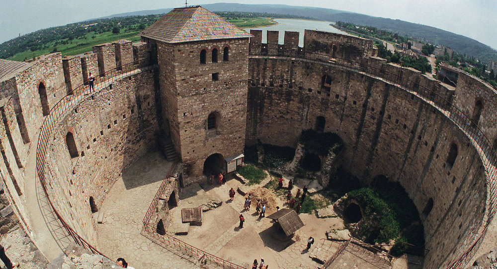
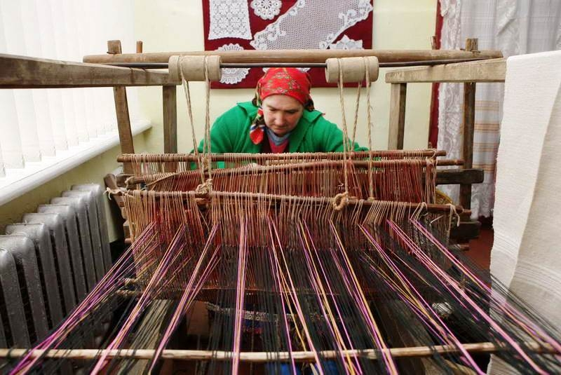

Традиционный молдавский костюм – свидетельство высокого мастерства народных рукодельниц, образец красоты, способный поведать о старинных традициях, живое свидетельство процесса народного творчества. В прошлом при украшении костюма вышивкой не допускалось копирование узоров и отступление от национальных традиций. Каждая девушка должна была создать свой праздничный костюм с учетом местных традиций, демонстрируя свой эстетический вкус. Наряд соответствовал характеру, возрасту и положению в обществе его владельца, гармонировал с его внешним обликом – цветом глаз и волос. Одежда была уникальной и неповторимой культурной ценностью. В прошлом невозможно было найти двух одинаковых женских костюмов – они отличались рисунком, цветом, пропорциями. Такого же принципа придерживались мастерицы (а это были мамы, бабушки или невесты) и при вышивании мужских рубах.
На протяжении веков традиционный костюм шили из домотканых полотен, выполненных вручную из шерстяных, конопляных, льняных, хлопчатобумажных, шелковых (боранжик) нитей, которые также изготавливались в домашних условиях. Народный костюм отличался богатым разнообразием в зависимости от социального, климатического, демографического фактора. На осенних ярмарках, в зимние календарные праздники, на сельских хорах и в пасхальные дни можно было наблюдать функциональные особенности костюма.
Старинные и богатые традиции молдавской литературы берут своё начало в XIV веке, а если считать устное народное творчество, то ее истоки уходят в незапамятные времена. Литература, будучи наиболее значительной областью молдавского культурного наследия, отражает историю молдавского народа на протяжении 650 лет со дня основания Молдавского государства, конкретную действительность и социально-экономические отношения каждой эпохи, преобладающие идеи, моральные нормы и эстетические вкусы, общественные интересы и устремления.
Молдавская литература является ярким отражением духовности народа, его национального самосознания, менталитета и специфических черт характера. На протяжении веков она подвергалась массовому и разнообразному влиянию литератур других народов. Оригинальность, национальная самобытность и творческая индивидуальность отразились в наиболее выдающихся произведениях молдавских писателей разных эпох – произведениях, которые вошли в золотой фонд мировой литературы.
Истоки театрального искусства восходят к Древней Греции, где мифология, литература и философия отражали представления о возникновении мира. Через искусство, спектакль человек пытался найти ответы на вечные вопросы о смысле бытия. Несмотря на потрясения разных исторических эпох, театр продолжал существовать. Изобретательность эпохи Возрождения, противоречивость и пыл Нового времени, основательность и формализм Новейшего периода лишь разнообразили театральное искусство. Будучи в постоянном контакте с публикой, театр играл и играет воспитывающую и формирующую роль, возвысив коллективное сознание над индивидуальным.
Современный театр служит некоей эмблемой для системы культурных идей. Влияния исторических эпох существуют на сцене в символической форме, но при этом они сохраняют свои главные характеристики. Человеческие характеры, ожидания, представления обретают четкие очертания в театральном искусстве. Предназначением театра всегда было сохранение культурных ценностей и их передача из поколения в поколение. Исторические волнения, поиски, прелести и нелепости демократии и глобализации с их двойной логикой — это те феномены, которые не могут не сказываться на современном театре. Задача нынешнего театра — помочь зрителю открыть комплексное видение общества и самого себя.
Архитектура – род человеческой деятельности, направленный на создание различных сооружений, используя научные знания, технические приемы и художественное мастерство. Термин «архитектура» обозначает искусство и науку о строительстве (с греческого «архи» – высшая степень чего-либо, а «тектура» (от слова «тектон) – строитель, то есть получается – «больше, чем строительство»). Это и определяет главное отличие произведений архитектуры от обычных построек.
Архитектура отличается от строительной деятельности еще и тем, что наряду с утилитарными задачами она удовлетворяет идеологические, социальные и эстетические запросы общества конкретного исторического периода. Одним из условий архитектуры является художественная трактовка конструкций, сплав конструктивного решения и художественного выражения, получивший название тектоника. Архитектура основывается на трех составляющих – полезность, прочность и красота, каждая из которых зависит от многих факторов. Наиболее значимые – это географические условия, общественный строй, технический прогресс. Сочетание этих факторов определяет специфику архитектуры каждого народа на разных этапах истории и влияет на изменчивость архитектуры во времени.
Архитектурное наследие, как правило, состоит как из высокохудожественных произведений, так и из менее значимых, составляющих массовую застройку. Архитектура по природе своей двояка, включая материальное производство и духовное содержание, влияющее на эмоциональное состояние человека. В сфере производства материальных благ архитектура зависит от универсальных законов физического мира, но как вид искусства – от личности творца, что обеспечивает уникальность произведений, их индивидуальность и оригинальность. На архитектуру Молдовы повлияли географические условия, характерные для страны с умеренным климатом (теплым летом и холодной зимой), а также использование местных строительных материалов, из которых самыми распространенными являются известняк-ракушечник, дерево и глина. Мастера-каменщики и архитекторы сумели синтезировать художественные влияния соответствующих эпох, сохранив при этом оригинальность местной архитектуры.
В молдавской народной музыке наиболее распространены семиступенные лады (дорийский, ионийский, лидийский, миксолидийский, фригийский, эолийский) с интервальной организацией между соседними ступенями в целый тон и полутон. Также встречаются лады, которые включают один или два полуторатоновых интервала, и уменьшённый лад. Молдавская музыка в основном диатонична. В инструментальной музыке встречаются хроматизмы. Важное место в молдавском народном творчестве занимают колинды, где преобладают архаичные ладовые структуры. Музыка колинд, наряду с танцевальной музыкой, имеет древнее происхождение, восходящее к эпохе синкретизма. Особенностью молдавской музыки является ладовая переменность. Наиболее распространён мажоро-минор, чуть менее миноро-мажор. Если при мажоро-миноре произведение обычно начинается в мажоре и кончается в миноре, то при минорно-мажорной системе в мажор представляет собой временное отклонение от основной тональности, когда произведение начинается и заканчивается в миноре. Присутствуют в молдавской музыке и такие формы, как бочет (причитание) и городской романс, пришедший в Молдавию в конце XVIII века. Богато народное творчество и инструментальными мелодиями, которые выполняют функцию сопровождения к танцу, а зачастую являются и самостоятельными художественными произведениями.
К духовым инструментам, используемым для исполнения народной музыки, относятся бучум, кавал, най, тарагот, тришка, вентильный тромбон, труба, чимпой, флуер; к струнным — виолончель, кобза, контрабас, скрипка, цимбалы; к ударным — барабан. В прошлом были распространены бухай, дайря, дрымба, лэута, сурла, трымбица, тумбелик. В советское время становятся популярными ансамбли «Мэрцишор», «Кодру», «Чобэнаш», «Чокырлия» и Валентина Кожокару, Сергей Лункевич, Константин Москович, Николае Сулак, Тамара Чебан. Народные песни исполняют также Надежда Чепрага и София Ротару. Среди современных исполнителей народной музыки следует выделить Василия и Виталия Адваховых, Дойну Арсене, Арсения Ботнару, Сергея Бэлуцела, Валентина Голомоза, Зинаиду Жуля, Василе Иову.
С внедрением в ковроделие химических красителей контраст цвета поля и узора становится основным характерным свойством молдавского ковра. К началу XX века широкое распространение получает ковер «рэзбой», в центре композиции которого находятся невообразимо яркие, объемные благодаря приему изображения светотени почти натуралистические розы. Иногда они соединены в букеты. На темном фоне ковра крупные розы горят как пламя. На кайме в дополнение к красочному центру изображается яркая гирлянда роз. Предприятия ручного ковроделия Молдавии сосредоточены главным образом в Страшенском и Ниспорен- ском районах. Тут предпочитают классический молдавский ковер гармоничной сдержанной гаммы. Предприятия много выпускают маленьких ковриков — «ницурка», всего в два цвета, строгих геометрических орнаментов.
Произведения художественных промыслов Молдавии в красивом ансамбле сосуществуют в парадной комнате жилища молдаванина — «каса маре». Обычно это нежилая, неотапливаемая комната для приема гостей, в которой находились самые красивые вещи: расписные деревянные сундуки с приданым для дочерей, на сундуках — стопки пестрых одеял и красочных ковров, на лавки положены тканые шерстяные дорожки — «лэичер», стены украшены паласами, в резных шкафчиках и на полках — гончарная посуда, которая вносит свою праздничную ноту яркой, веселой, зелено-золотистой росписью. На стенах висят вышитые рушники. Стены и печку — «куптор» женщины расписывали цветочными композициями. «Каса маре» в доме молдавского жителя и сегодня подлинный домашний музей, который говорит о талантах и большом вкусе живущего в доме человека.
Скульптура (от лат. sculpere - высекать, вырезать) – искусство создания трёхмерных форм из различных материалов (камень, мрамор, гранит, бронза, золото, серебро, дерево, терракота и т.д.) путём высекания, лепки, либо литья, при помощи специальных форм с целью получения изображения, которое можно поместить в пространство интерьера или экстерьера. Наряду с живописью, графикой и декоративно-прикладным искусством, скульптура является одной из основных областей изобразительного искусства. Возникает в эпоху палеолита, когда появляются антропоморфные и зооморфные статуэтки, и присутствует затем во все исторические эпохи и во всех географических регионах.
Скульптура развивалась в тесной связи с архитектурой (египетские, месопотамские, греческие храмы, готические соборы), играя важную роль в синтезе архитектуры и монументального искусства, начиная с периода античности (колонна Траяна, конная статуя Марка Аврелия). На протяжении тысячелетий, развивалась, принимая различные формы и размеры, от скульптуры малых форм до статуй и монументальных композиций, прославляя значимые исторические и мифологические личности и события. В этой области были созданы скульптуры изобразительного, декоративного или функционального характера (бюсты, статуи, монументальные композиции, капители), трёхмерные по объёму (круглые, рельефы, горельефы, барельефы). А. Плэмэдялэ. Сафо, 1920 Б. Эпельбаум-Марченко. Акстриса Мария Сагайдак, 1977 Среди знаменитейших произведений мирового скульптурного искусства Венера из Виллендорфа (начало III тыс. до н.э.), портрет царицы Нефертити, золотой саркофаг Тутанхамона (XIV до н.э.), Дискобол Мирона (V век до н.э.), скульптуры Пергамского алтаря (180 г. до н.э.), произведения Микеланджело (XVI-й век), Статуя Свободы французского скульптора Фредерика-Августа Бартольди (1886), Родена (XX-й век).
На территории Республики Молдова скульптура известна со времён энеолита, наиболее выдающиеся произведения относятся к кукутень-трипольской и гумельницкой культурам: многочисленные антропоморфные фигурки, («Мыслитель» из Вулканешт, IV- III тыс. до н.э.), позднее также появляются и в рамках скифской культуры (антропоморфные статуи из Александровки, Чобурчиу и т.д., II-е тыс. до н. э.). Среди наиболее старых средневековых скульптур выделяются гербы молдавских господарей, высеченные на фасадах крепостей и основанных церковных зданий. Особая роль принадлежит народной скульптуре, в которую традиционно входило искусство резьбы по дереву и камню для украшения крестьянских домов (ворота, колонны с капителями, коньки крыш и т.д.) и создания Троиц - традиция, которая продолжается и сегодня.
Первым профессиональным скульптором периода между двумя мировыми войнами (1920-1940) считается А. Плэмэдялэ, автор памятника Штефану Великому в Кишинёве (1928) и многочисленных бюстов выдающихся личностей (А. Матеевич, Т. Чорба, Б. П. Хаждеу). Скульптура в Молдавской ССР (1945-1960) создавалась поколением, которое сформировалось профессионально в предыдущем периоде. Основная роль в развитии этой области молдавского искусства принадлежит скульпторам: Дубиновскому (Стрымбэ-Лемне, 1945: конная статуя Г. И. Котовского, 1953, Кишинёв) и К. Кобизевой (Портрет Анны-Марии, 1937; Молдаванка, 1947), которые создали произведения монументальной скульптуры и многочисленные портреты, работая в специфических условиях ангажированного искусства. Отличительной особенностью произведений, созданных в этот период является, особенно в монументальной скульптуре, чрезмерный патриотический пафос, что типично для всего советского изобразительного искусства. Важную роль в развитии национальной скульптуры сыграло открытие Аллеи классиков в Центральном парке в 1954-м году, в создании которой участвовали Л. Дубиновский, Л. Авербух, Н. Горёнышев, Иосиф Кептенару, Л. Фитов и др. В 70-е годы выделяется творчество скульпторов М. Спиней, Г. Дубровина, А. Пикунова, Н. и Б. Эпельбаума-Марченко, Ю. Канашина, В. Кузнецова и др.
В скульптуре последних трёх десятилетий (1980-2010), наряду с традиционным искусством, чаще используются необразные формы в портретах и монументальной скульптуре, среди скульпторов этого периода можно назвать В. Выртосу, И. Здерчук, Т. Катарага, Д. Вердяну, Н. Искимжи и др.